Structure you can check:
keys and ontologies from real databases
Both manuscripts grew out of building an enterprise ontology platform. They ask the same question from two sides: when a relational database is turned into keys, relations and concepts, which part of the result can be trusted, and at what cost in model calls? Both are first-author manuscripts with Weisong Sun (Nanyang Technological University) as corresponding author, prepared for IEEE TKDE (CCF-A).
RefSel: Risk-Controlled Foreign-Key Discovery with Bounded Language-Model Evidence
Many production databases leave foreign keys undeclared, and inferring them from value inclusion alone is unreliable: across 259 public databases, 64% of declared keys that target an integer key have a competing key that also contains every source value. RefSel scores candidates with a chance model for inclusion, decodes a whole database jointly with an exact solver, and calibrates a retention threshold so that the expected share of wrong keys stays below a requested level. Language-model evidence is allowed in only as a bounded prior and a veto. On 60 previously unseen databases it raised macro F1 from 0.402 to 0.476 with about one-seventh of the model calls of a comparable LLM-based method; the difference to that method was not statistically significant.
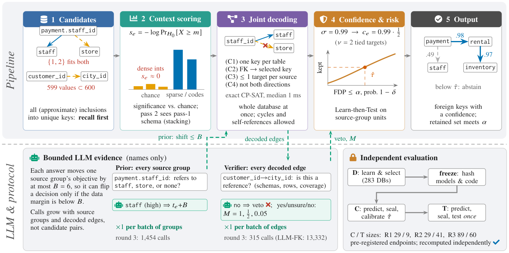
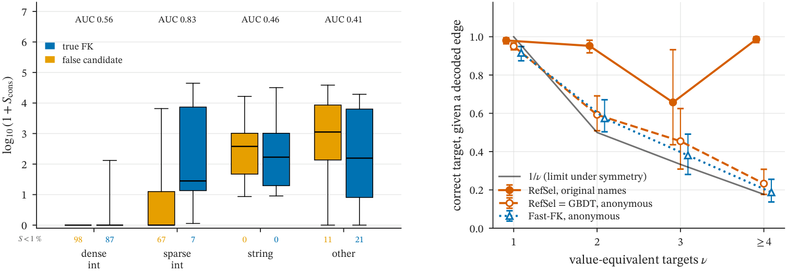
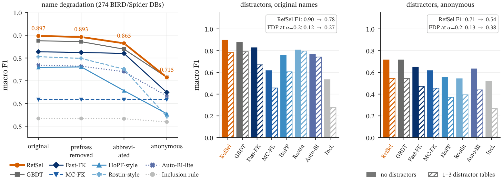
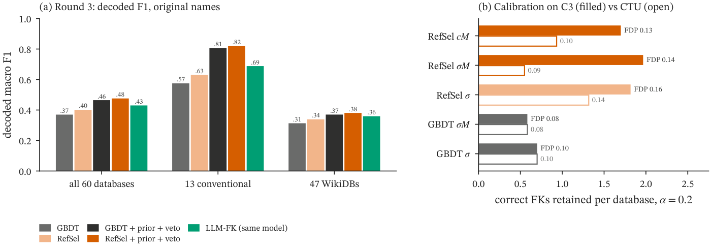
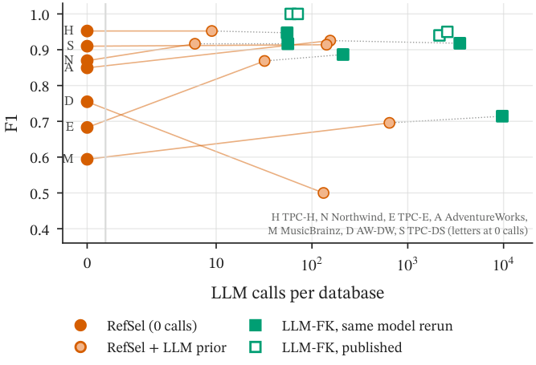
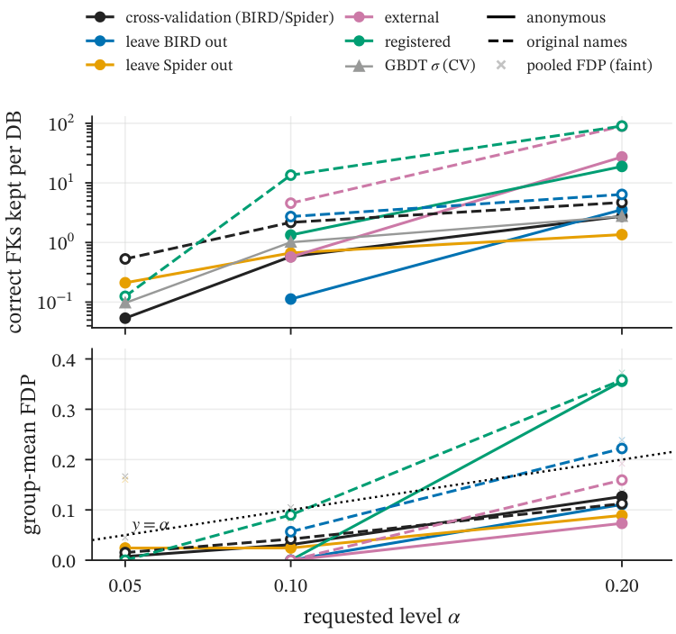
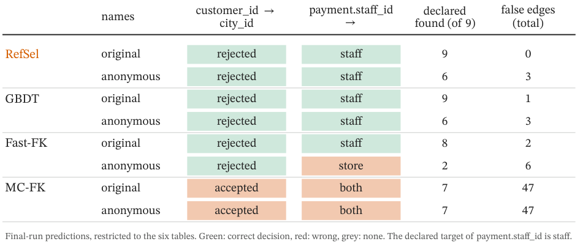
What Matters in LLM-Based Ontology Learning from Relational Databases? A Pre-Registered Study
Large language models now write ontologies and database mappings fluently, so it is tempting to conclude that model choice decides quality. In a pre-registered study of 25 configurations on the Burr benchmark, five added databases and RODI, we find it does not: the models we compared on eight databases span only 0.59–0.64 F1. Calling the model once per table, rather than once per schema, brought no systematic gain when both regimes saw the complete schema, at about eleven times the input tokens. Rules driven by data profiling come within 0.03 of the best language-model configuration without any model call. We also report a prompt-construction bug that first suggested the opposite, and a direction-blind relation score in the benchmark.
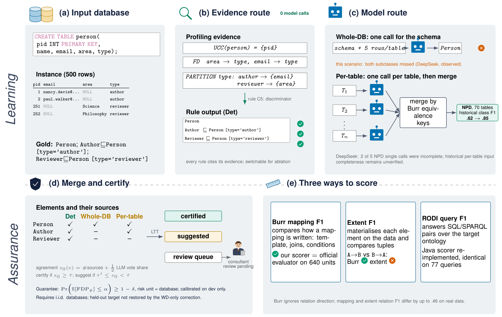
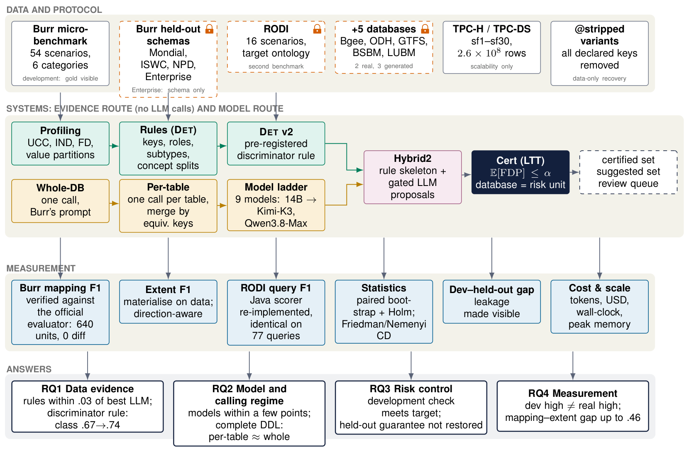
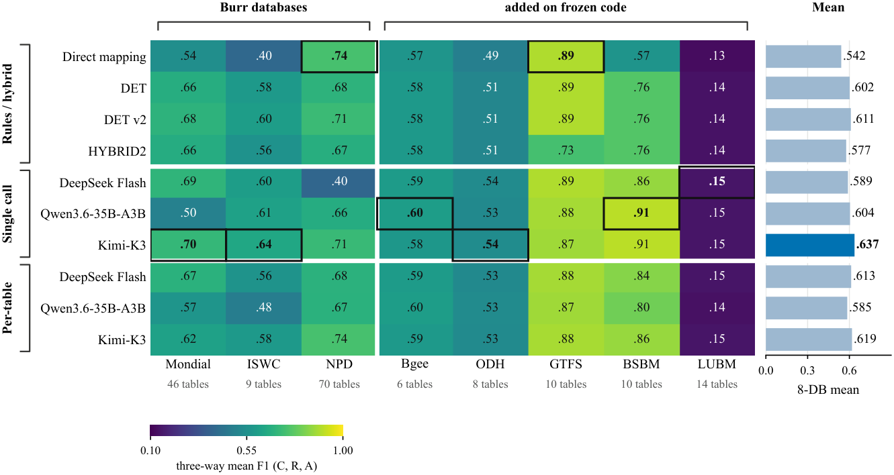
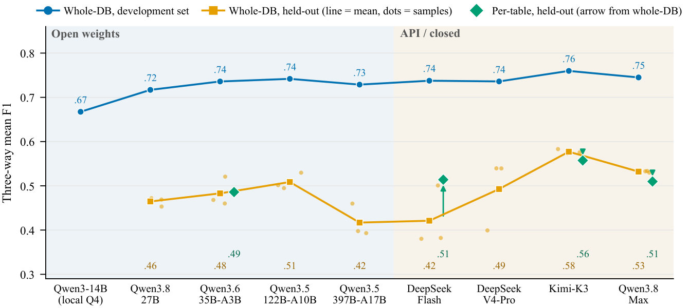
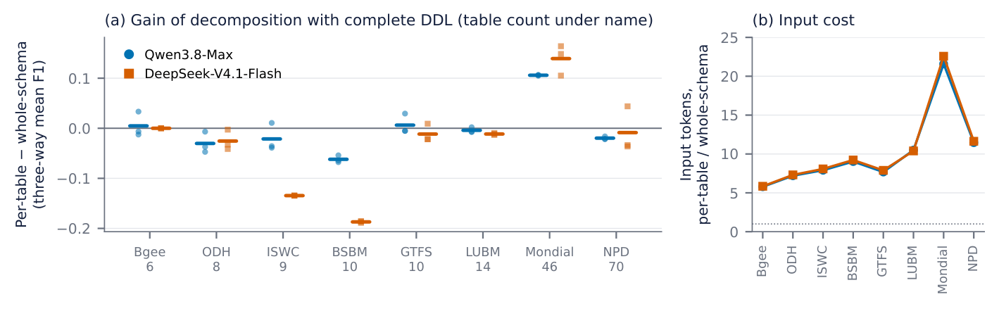
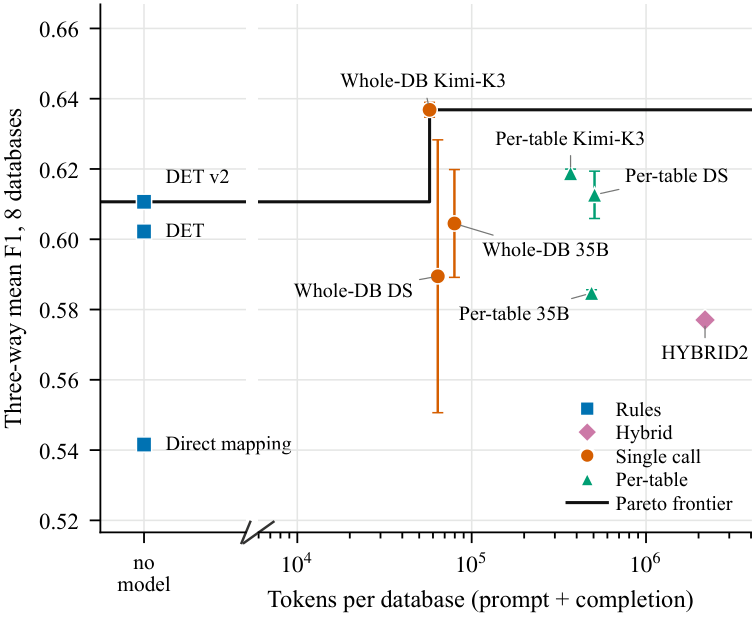
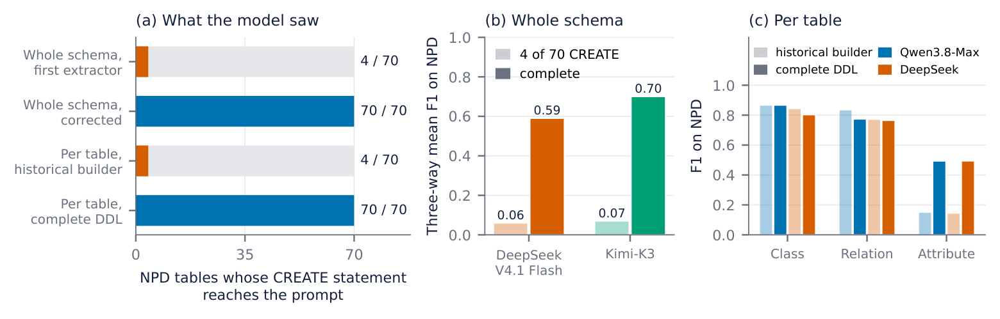
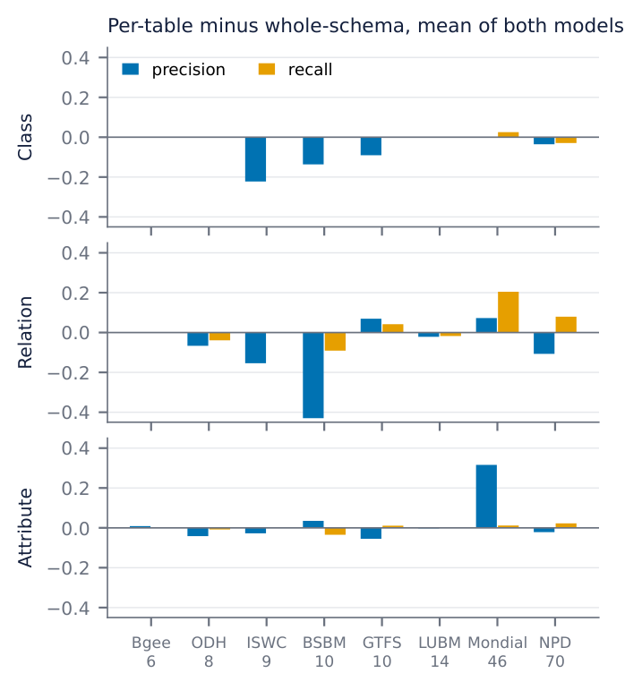
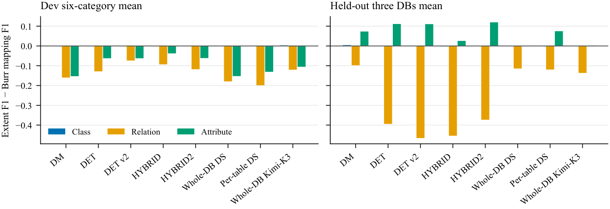
Where the methods run
The same ideas are wired into the ontology platform I built: RefSel's veto sits in the relation-discovery stage, and the profiling rules (unique column combinations, inclusion dependencies) are the platform's data-ontology branch.
work.linjm.cc/onto.htmlEleven stages; stage 03 uses the bounded veto.
02Data ontology on real tableswork.linjm.cc/onto.html#dataKeys, relations and broken links on a 1.3-million-row ERP export.
03Live deploymentswork.linjm.cc/status.htmlDemo instances on my own server (passcode on request).
04Astronomy publicationswww.linjm.cc/research.htmlMy first-author papers in ApJ, A&A, ApJL and ApJS.